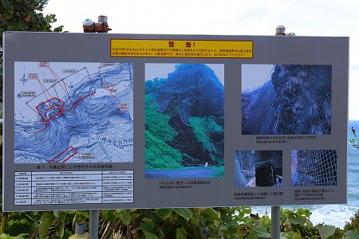

秋の北海道である。
いつもは家族旅行だったり妻との二人旅だったり、一人旅だったりするのだが、今回は人気ブログ
超魔界帝国の逆襲の
大魔王君をゲストに迎え、妻との3人旅。
6月に開催された珍寺大道場大博覧会2にて大魔王君と意気投合し、そのうち一緒に出掛けよう！と言っていたのだ。
そんなドリカム編成…(あ！今は三人じゃない！)…もとい、幸せの黄色いハンカチ編成のトリオがまず向かったのが小樽市郊外のオタモイ。
オタモイとはアイヌ語で砂の入り江という意味だそうな。
ここには
北海道屈指の地蔵信仰の聖地である
オタモイ地蔵がある。
そしてそのオタモイ地蔵の手前にはかつて
オタモイ遊園地と呼ばれた巨大な行楽施設があったのだという。
今回のミッションはオタモイ地蔵訪問とオタモイ遊園地の痕跡を訪ねること。
観光客でにぎわう小樽市街を抜け、段々車の行き来も少なくなってくるころ、こんな看板が見えてくる。
（撮影；大魔王君）
ハイ。ここが今回の目的地、小樽の秘境オタモイの入り口である。
この一帯は国定公園に指定されており、海と山が近く、急峻で雄大な景色が楽しめる。
…つまり凄く辺鄙なところ、ということですな…
「土砂崩れのためオタモイ遊歩道は通行止です」との非情なメッセージ。
しかし事前のリサーチで通行止めなのは織り込み済みな我々。
幸せの黄色いハンカチトリオは怯むことなく先へ先へと進むのであった。
道を進むにしたがって人家は途絶え、こんな感じの道になってくる。
「落石の恐れあり」の標識が一寸シャレになってない感じの道をさらに進む。
ちなみに黄色いハンカチトリオ、秋の北海道だというのに紅葉も時計台もカニもジンギスカンもラーメンも一切シカトして空港からここに直行してます。
「これでいいのか？」といういささかの疑問を感じないわけでもないが、大魔王君も我々も長年珍寺珍スポ探しの旅を続けている因果者同士、途中セイコーマートで雑なカロリー摂取しただけで、目的地に邁進するのであった。
そうこうしているうちに立派な唐門が現れる。
これは戦前に存在した
オタモイ遊園地入り口にあった門だ。
かつては様々な遊戯施設や建物があったのだが、今はこの門しか残っていない。詳しくは後述する。
いわゆる竜宮門スタイル。
以前からずーっと疑問に思っていたのだが、このような竜宮門って袴の部分が漆喰（ここのはコンクリかな）で塗り籠められているので、上の部分に入る事が出来ないんだよね。
一部には袴の部分がに階段があって上に登れるようになっている門もあるがほとんどはここの唐門同様、上の部分は単なる飾りになっている。
この唐門も袴の部分に階段などはなく、上に登れるはずもないのだが、扉に鍵が掛かっていた。
別に大した事ではないが、なんだか妙に気になった。
唐門の近くにあった小さな小屋。
中を覗くと石像が置かれていた。

石像はほとんどが地蔵だった。
これは想像だが、オタモイ地蔵へ行くのが困難な人がここで参拝や祈祷や地蔵奉納をしていくのかもしれない。
首のない地蔵に子供がすがっていたよ…。
そんなこんなでワインディングロードを進んでいくと突然視界が広がる。
海に面した眺望の良い場所だ。
傍らにぽつんと看板があり、この空き地がかつてのオタモイ遊園地の跡地であることを示している。
このオタモイ遊園地とは、小樽の割烹、蛇の目の主人である加藤秋太郎という人が昭和11年に作り上げた遊園地だった。
ブランコや滑り台、相撲場の他、宴会場や食堂なども併設し、最盛期には一日数千人もの観光客が訪れたという。
しかし、戦争の影響で客足が遠のき、営業再開を目指していた昭和27年に焼失してしまったのだ。
説明版にあった画像より。こちらが食堂。
個人的には一番気になっていた辨天拝殿。縦に引き伸ばした銀閣寺みたいで超カッコ良くないですか？
ここは元々白蛇伝説の残る地だったという。
つまり遊園地とはいえ、信仰や伝説をベースにしたある種の宗教テーマパークのようなところだったのかもしれない。
そして
オタモイ遊園地の最大の見どころであった龍宮閣。
急峻な崖の上に建つ懸け造りの楼閣建築だ。
ハッキリ言ってかなり危険な場所に建っているのは写真を見るだけで明らか。
恐らく現在では建築許可自体が下りないだろうなあ。
オタモイ海岸の図（ところどころひび割れてるのは勘弁してね）。
かつてはこのように大勢の観光客が訪れていたらしい。
他にもかつての地図を見ると演芸場などもあり、なかなか楽しそうな行楽地だったようだ。
今はなーんにもない更地になっている。
そんながらーんとした空き地のの一画に看板が。
実はここから海沿いの遊歩道を通ってオタモイ地蔵に行くのだが、
がけ崩れのため立ち入り禁止になっている。

かなり具体的に崩落個所の説明がされている。
危険！立入禁止！
まあ、普通ならここで引き下がるのだが、その傍らにこんな看板があるのです。
「オタモイ地蔵尊 扉あけます 連絡してください お参りの方」
…つまり小樽市は通行を禁止しているが、オタモイ地蔵へ行く道はここしかないし、参拝するにはどうしても通らざるを得ないのだ。
看板に記された番号に電話してみる。
「…もしもし…」
「スミマセン！そちらにお参りに行きたいのですが、行っちゃっていいですか？」
「ああ、はいはい。いいよ。どうぞどうぞ」
…なんだかよくわからないが、市で通行を禁止している道を通って来ていいよ、という事らしい。
あまり詳細に書くとオタモイ地蔵サイドに迷惑がかかる可能性があるので断言は避けるが、まあ、通行すること自体に問題はないみたいです。
（あくまでも
ここだけのハナシ、ということにしてください。ナイショだよ！）
ただし、道中で落石に遭遇したり崖崩れで海中に落ちても絶対文句は言えまい。
もう一度言っておこう。この道を行かんとするものは全ての責任を己に負わすべし。
間違っても小樽市やオタモイ地蔵に迷惑のかかるような行動は慎んでいただきたい。
改めてオタモイ地蔵への道を見る。
崖の途中に竜宮門のようなものがご覧いただけるだろうか？
えー、あんなとこ行くのー。と思ったが、そこはまだまだ序の口だった。
何があっても自己責任！と我が身に聞かせオタモイ地蔵への道を歩み始める。
擬宝珠のある道はかつて使われていたが、今は使用されていない。
さらに海岸に降りる道があるが、そちらはオタモイ地蔵への道ではないので要注意だ。
獣道のような道を進む。
戦前にはこの道を多くの観光客が歩いたのだろうか。
崖沿いの道から下を見下ろす。
以前は海沿いにキャンプ場があったそうだが、今は何もない。
段々竜宮門が近づいてきた。
崖側にはずーっと金網のネットが被せられていて、この崖がかなり危険な状態であることが判る。
ここに至るまで、かなり大きな岩が通路に転がっていた。こんなのが直撃したらひとたまりもなく死んでるだろうなあ。
で、やっと竜宮門に到着した。
門の先は手掘りの短いトンネルになっている。
さらに道は続く。
段々崩落が激しくなっているような気がする…。
短いトンネルを抜けると先ほどの空き地からは見えなかったエリアが見えてくる。
崖の上にあるのは龍宮閣の跡地だ。
今は建物もなく、赤い手すりに囲まれているだけだが。
下を見ると相当な絶壁にあることが判る。
道には赤い手すりが付いているが、山側の手すりが
すげー曲がってるんですけど。
…多分落石、しかも相当大きな石が直撃して歪んじゃってるんですよね…。
リバースアングル。
先ほど出てきたトンネルの上に送電施設が見える。ただし、電線はないので、龍宮閣が火災を起こす前の戦前に架設されたものだろう。
崖側にはこれまた手掘りの小部屋があるようだったが、金網のネットが張られ中に入ることはできなかった…
というわけで、やっとオタモイ地蔵の核心部に近づきつつあるが、この先さらなる難関が控えているので一旦ブレイクさせてください…。